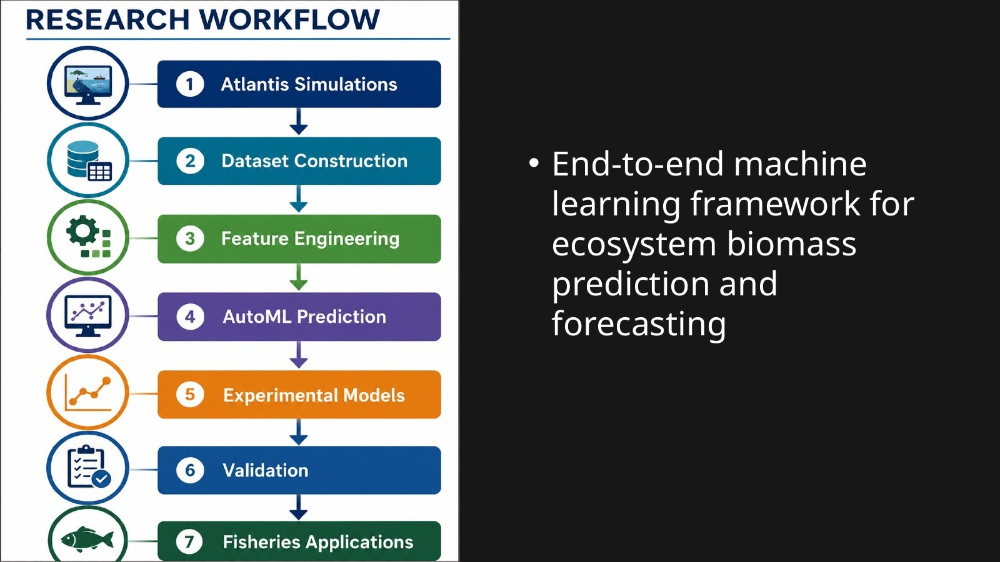
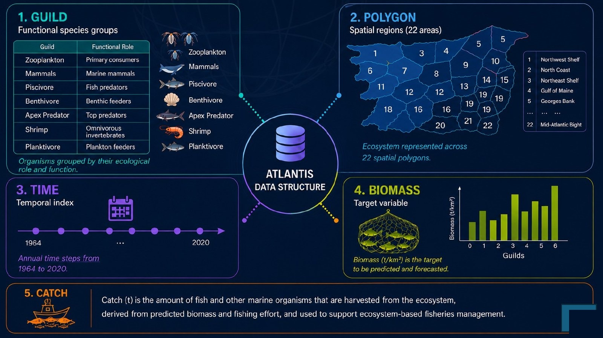
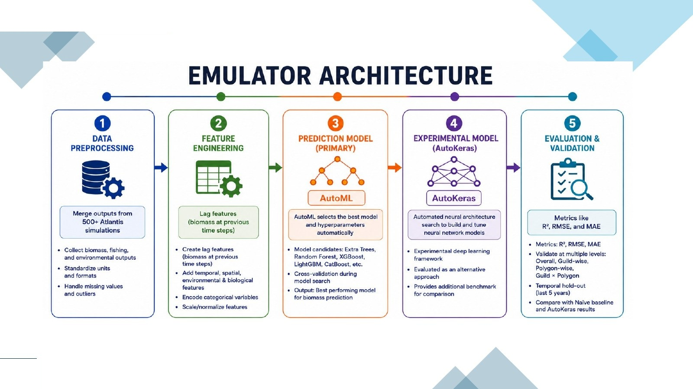
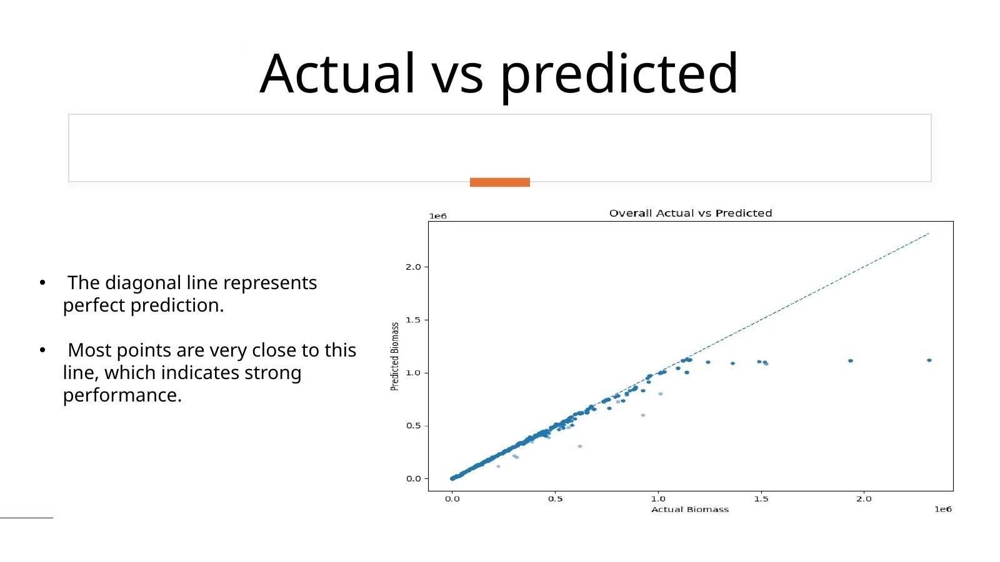
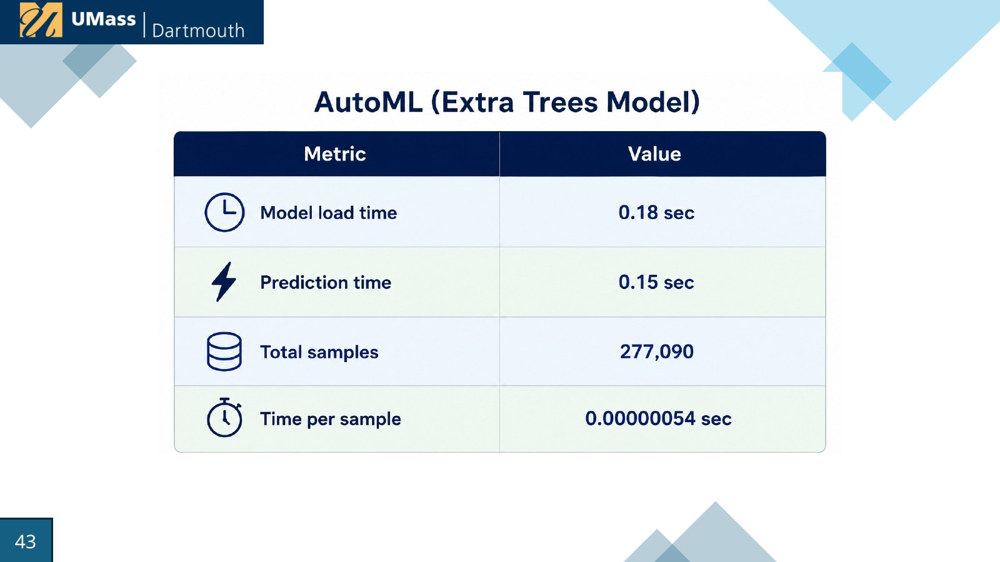
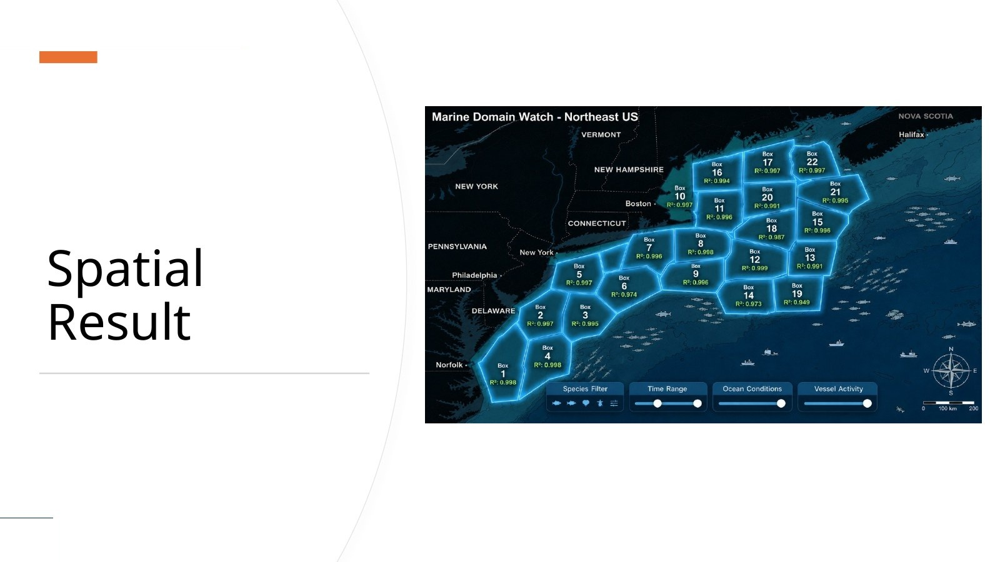
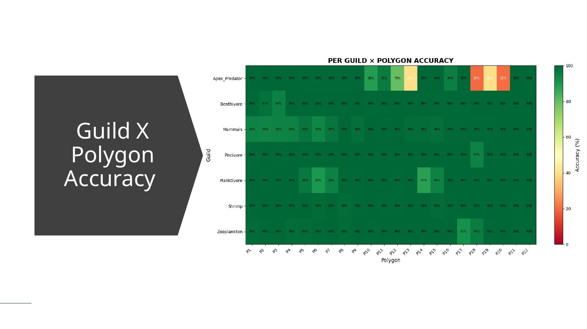
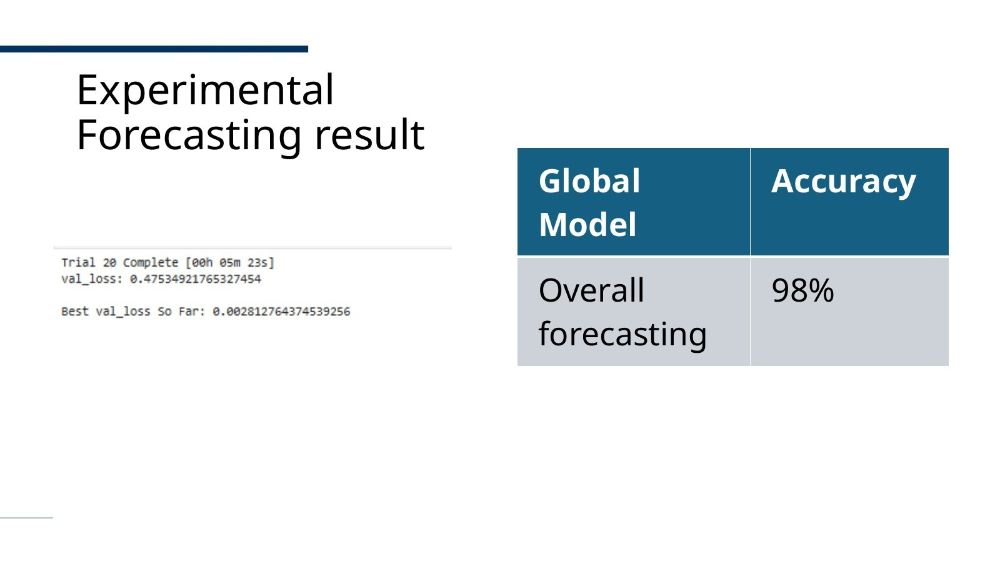

Extra Trees selected through AutoML
Candidate models included Random Forest, XGBoost, LightGBM, CatBoost, and Extra Trees. Extra Trees provided the best overall balance for the primary emulator.
A Machine Learning Approach for Biomass Prediction and Forecasting
Developed a scalable machine-learning ecosystem emulator for the Northeast U.S. Atlantis model— delivering highly accurate biomass prediction and long-term forecasting while reducing the computational burden of repeated ecosystem simulations.
Atlantis represents multispecies interactions, fishing pressure, environmental variability, and spatial ecosystem structure. That ecological richness makes it valuable for ecosystem analysis, but repeated simulations can require substantial computation and limit rapid scenario exploration.

The integrated dataset captures ecological behavior across guilds, space, time, catch, and environmental conditions.

The framework combined large-scale preprocessing, lagged and time-aware features, AutoML-based regression, experimental neural architecture search, and strict temporal validation.

Candidate models included Random Forest, XGBoost, LightGBM, CatBoost, and Extra Trees. Extra Trees provided the best overall balance for the primary emulator.
Automated neural architecture search was explored as a complementary deep-learning framework for learning sequential ecosystem dynamics.
The final five years were held out to evaluate generalization under unseen temporal conditions and reduce leakage risk.


The emulator was examined across individual polygons and guild × polygon combinations to reveal where predictions were strong and where ecological sparsity created harder cases.


Lagged biomass and time-aware features encoded ecological memory. The complementary AutoKeras experiment selected an LSTM-based approach and reported approximately 98% overall forecasting accuracy in the defense results.

The goal is not to replace mechanistic ecosystem models. The emulator acts as a computationally efficient approximation that can support faster biomass estimation, scenario exploration, and future decision-support workflows.
Graduate Research Assistant at the School for Marine Science & Technology, UMass Dartmouth.
View Fay Lab profile ↗Co-advised across Computer & Information Science and Fisheries Oceanography.
The related MUST project, led by Gavin Fay, focuses on machine-learning statistical emulators for complex spatial marine ecosystem models.
View MUST project ↗Ajmal Abbas · M.S. Data Science · University of Massachusetts Dartmouth · 2026
DOI: 10.62791/20585
Scientific AI · Surrogate Modeling · Environmental Intelligence